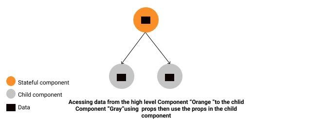

ReactJS is an open-source, component-based front end library responsible only for the view layer of the application. It is maintained by Facebook.
It designs simple views for each state in your application, and React will efficiently update and render just the right component when your data changes. The declarative view makes your code more predictable and easier to debug.
A React application is made of multiple components, each responsible for rendering a small, reusable piece of HTML. Components can be nested within other components to allow complex applications to be built out of simple building blocks.
Note: React is not a framework. It is just a library developed by Facebook to solve some problems that we were facing earlier.
Prerequisites: Download Node packages with their latest version.
Example: Create a new React project by using the command below:
npx create-react-app myapp
In React, for every DOM object, there is a corresponding “virtual DOM object.” A virtual DOM object is a representation of a DOM object, like a lightweight copy. The Virtual DOM is an abstraction of the HTML DOM. Since the DOM itself was already an abstraction, the virtual DOM is, in fact, an abstraction of an abstraction.
For example, using props and state, we can put together a small Todo application. This example uses state to track the current list of items as well as the text that the user has entered. Although event handlers appear to be rendered inline, they will be collected and implemented using event delegation.
Props are the data we pass -or can access- from the top-level components to any number of child components on our website
The Props Drilling (Threading) is a concept that refers to the process you pass the data from the parent component to the exact child Component,
BUT in between, other components owning the props just to pass it down the chain
Prop Drilling is an anti-pattern in which props are passed through intermediate components that do not use the received props, but only pass them to the next components.
Prop-Drilling Bad
The reason for the popularity of redux, among other things, was that react-redux solved the problem of prop drilling. Redux made it possible to exchange data between different parts of the component tree, simply by passing a component to the magical connect function.
1.A single source of truth. The state of your entire application is stored in an object tree within a single repository
2.The only way to change state is to apply an action - an object that describes what will happen.
3. To determine how the state tree will be transformed by actions, you write pure redusers.
The recommended way to start new apps with React and Redux is by using the official Redux+JS template or Redux+TS template for Create React App
# Redux + Plain JS template
npx create-react-app my-app --template redux
# Redux + TypeScript template
npx create-react-app my-app --template redux-typescript
The Redux core library is available as a package on NPM for use with a module bundler or in a Node application:
# NPM
npm install redux
# Yarn
yarn add redux
import React from "react";
import ReactDOM from "react-dom";
import { Provider } from "react-redux";
import store from "./redux/store";
import TodoApp from "./TodoApp";
const rootElement = document.getElementById("root");
ReactDOM.render(
,
rootElement
);
MOBX installation
npm install mobx-react --save
import { observer } from "mobx-react"
// ---- ES6 syntax ----
const TodoView = observer(
class TodoView extends React.Component {
render() {
return {this.props.todo.title}
}
}
)
// ---- or just use function components: ----
const TodoView = observer(({ todo }) => {todo.title})
| Criteria for comparison | REDUX | MOBX |
| Store | single | multiple |
| Data | plain | observable |
| States | immutable | mutable |
| Debugging | + | - |
| Developer support | + | - |